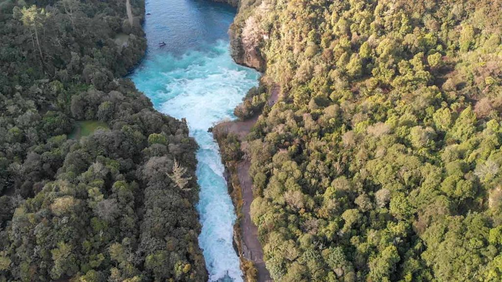

Huka Falls is one of New Zealands most visited natual location. They are a collection of captivating waterfalls in the heart of Taupo, and are connected to the Waikato River. The Huka Falls are incredibly powerful and erupt from a natural gorge at a rate of 220,000 litres per second.
